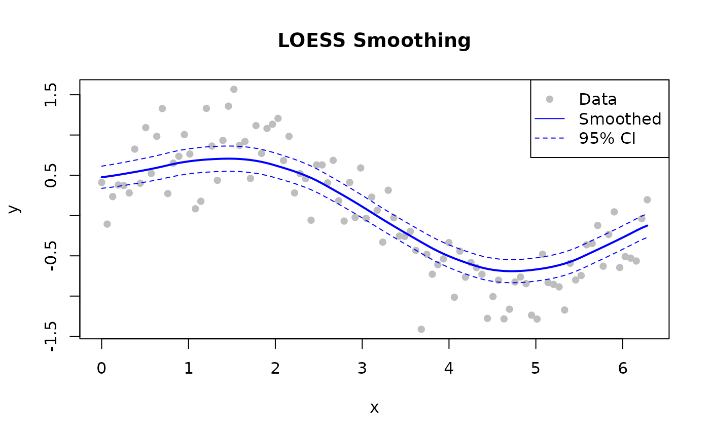

Basic Smoothing
Smooth a noisy sine wave. fraction = 0.3 and
iterations = 3 are good starting values for most
signals.
library(rfastloess)
# 100-point noisy sine wave
set.seed(42)
x <- seq(0, 2 * pi, length.out = 100)
y <- sin(x) + rnorm(100, sd = 0.3)
model <- Loess(fraction = 0.3, iterations = 3)
result <- fit(model, x, y)
cat(sprintf("First smoothed value: %.4f (true: %.4f)\n",
result$y[1], sin(x[1])))
#> First smoothed value: 0.4263 (true: 0.0000)With Confidence and Prediction Intervals
Set confidence_intervals and/or
prediction_intervals to a coverage level (0–1).
library(rfastloess)
set.seed(42)
x <- seq(0, 2 * pi, length.out = 100)
y <- sin(x) + rnorm(100, sd = 0.3)
model <- Loess(
fraction = 0.5,
iterations = 3,
confidence_intervals = 0.95,
prediction_intervals = 0.95,
return_diagnostics = TRUE
)
result <- fit(model, x, y)
cat("Confidence lower bounds:\n")
#> Confidence lower bounds:
print(result$confidence_lower)
#> [1] 0.33814045 0.34559162 0.35399225 0.36347929 0.37358247 0.38383873
#> [7] 0.39441130 0.40544257 0.41704533 0.42931726 0.44238061 0.45635977
#> [13] 0.47138978 0.48599617 0.49870935 0.50966200 0.51898743 0.52682310
#> [19] 0.53330642 0.53856828 0.54274297 0.54596168 0.54835288 0.54949913
#> [25] 0.54878237 0.54604454 0.54114909 0.53397451 0.52437197 0.51217097
#> [31] 0.49720203 0.47929995 0.45986428 0.44010108 0.41956595 0.39779601
#> [37] 0.37434334 0.34875847 0.32055427 0.28922394 0.25427411 0.21713362
#> [43] 0.17950664 0.14134663 0.10260600 0.06322512 0.02312754 -0.01776651
#> [49] -0.05952766 -0.10221202 -0.14497582 -0.18701429 -0.22844034 -0.26934813
#> [55] -0.30982028 -0.34994809 -0.38982323 -0.42952884 -0.46914486 -0.50875386
#> [61] -0.54688135 -0.58217282 -0.61487482 -0.64522563 -0.67345879 -0.69981202
#> [67] -0.72452479 -0.74784582 -0.77002714 -0.78968383 -0.80542899 -0.81751694
#> [73] -0.82619362 -0.83170102 -0.83428763 -0.83419335 -0.83165480 -0.82690669
#> [79] -0.82018670 -0.81195272 -0.80226934 -0.79078763 -0.77715174 -0.76099585
#> [85] -0.74194669 -0.71964539 -0.69373511 -0.66386529 -0.63193396 -0.60000186
#> [91] -0.56796897 -0.53574925 -0.50325928 -0.47041276 -0.43711641 -0.40326534
#> [97] -0.36874546 -0.33344849 -0.30035213 -0.27187955
cat("Confidence upper bounds:\n")
#> Confidence upper bounds:
print(result$confidence_upper)
#> [1] 0.613537316 0.623685894 0.634929636 0.647341050 0.660369094
#> [6] 0.673482436 0.686767699 0.700332349 0.714313434 0.728863140
#> [11] 0.744109063 0.760176658 0.777180750 0.793586862 0.807871035
#> [16] 0.820173484 0.830633810 0.839387443 0.846569888 0.852323150
#> [21] 0.856785840 0.860099685 0.862409101 0.863322170 0.862261515
#> [26] 0.859079001 0.853604974 0.845654753 0.835070969 0.821717925
#> [31] 0.805458908 0.786152912 0.765217005 0.743859576 0.721615594
#> [36] 0.698038467 0.672666683 0.645040252 0.614736882 0.581353896
#> [41] 0.544475243 0.505572148 0.466355917 0.426736745 0.386625849
#> [46] 0.345946514 0.304638810 0.262646160 0.219902841 0.176328591
#> [51] 0.132781331 0.090123951 0.048282037 0.007162380 -0.033339722
#> [56] -0.073320346 -0.112875141 -0.152108330 -0.191127319 -0.230036883
#> [61] -0.267392181 -0.301844086 -0.333656980 -0.363103493 -0.390461036
#> [66] -0.416002788 -0.440000208 -0.462715516 -0.484407580 -0.503686428
#> [71] -0.519139159 -0.530985026 -0.539451670 -0.544770672 -0.547167114
#> [76] -0.546874696 -0.544130345 -0.539172952 -0.532238402 -0.523763628
#> [81] -0.513794664 -0.501977730 -0.487965980 -0.471422511 -0.452017902
#> [86] -0.429408304 -0.403247852 -0.373184391 -0.341108992 -0.309078850
#> [91] -0.276984577 -0.244702786 -0.212107487 -0.179075565 -0.145490878
#> [96] -0.111248896 -0.076254291 -0.040405930 -0.006689797 0.022450759
cat("R²:", result$diagnostics$r_squared, "\n")
#> R²: 0.78173Streaming Mode
For large datasets (>100K points) that may not fit in memory.
library(rfastloess)
set.seed(42)
x <- seq(0, 2 * pi, length.out = 10000)
y <- sin(x) + rnorm(10000, sd = 0.3)
model <- StreamingLoess(
fraction = 0.3,
iterations = 2,
chunk_size = 5000,
overlap = 500,
merge_strategy = "weighted_average"
)
# Process one chunk at a time
chunk_x <- x[1:5000]
chunk_y <- y[1:5000]
result <- process_chunk(model, chunk_x, chunk_y)
# Finalize after all chunks
final <- finalize(model)
cat("First 6 smoothed values (streaming, weighted_average merge):\n")
#> First 6 smoothed values (streaming, weighted_average merge):
print(head(final$y))
#> [1] 0.3231448 0.3226993 0.3222537 0.3218081 0.3213625 0.3209169Online Mode
For real-time / point-by-point processing.
library(rfastloess)
set.seed(42)
times <- 1:100
temperatures <- 20 + 5 * sin(times / 10) + rnorm(100)
model <- OnlineLoess(
fraction = 0.3,
window_capacity = 25,
min_points = 5,
update_mode = "incremental"
)
for (i in seq_along(times)) {
result <- add_point(model, times[i], temperatures[i])
if (!is.null(result))
cat(sprintf("Time %d: %.2f\n", times[i], result$y))
}
#> Time 5: 22.80
#> Time 6: 22.72
#> Time 7: 24.73
#> Time 8: 23.49
#> Time 9: 25.94
#> Time 10: 24.14
#> Time 11: 25.76
#> Time 12: 26.95
#> Time 13: 23.43
#> Time 14: 24.30
#> Time 15: 24.80
#> Time 16: 25.41
#> Time 17: 24.95
#> Time 18: 22.92
#> Time 19: 22.27
#> Time 20: 24.58
#> Time 21: 24.31
#> Time 22: 23.07
#> Time 23: 23.27
#> Time 24: 24.09
#> Time 25: 24.68
#> Time 26: 23.09
#> Time 27: 22.25
#> Time 28: 20.64
#> Time 29: 21.23
#> Time 30: 20.46
#> Time 31: 20.61
#> Time 32: 20.44
#> Time 33: 20.33
#> Time 34: 18.89
#> Time 35: 18.74
#> Time 36: 16.96
#> Time 37: 16.66
#> Time 38: 16.21
#> Time 39: 14.89
#> Time 40: 15.70
#> Time 41: 15.95
#> Time 42: 15.59
#> Time 43: 15.94
#> Time 44: 15.02
#> Time 45: 14.19
#> Time 46: 14.93
#> Time 47: 14.47
#> Time 48: 15.78
#> Time 49: 15.07
#> Time 50: 15.61
#> Time 51: 15.63
#> Time 52: 15.13
#> Time 53: 16.57
#> Time 54: 16.74
#> Time 55: 16.70
#> Time 56: 16.94
#> Time 57: 17.58
#> Time 58: 17.74
#> Time 59: 16.09
#> Time 60: 17.81
#> Time 61: 18.41
#> Time 62: 19.41
#> Time 63: 20.24
#> Time 64: 21.42
#> Time 65: 20.80
#> Time 66: 22.13
#> Time 67: 22.29
#> Time 68: 23.15
#> Time 69: 23.59
#> Time 70: 23.91
#> Time 71: 23.08
#> Time 72: 23.56
#> Time 73: 24.39
#> Time 74: 23.92
#> Time 75: 24.06
#> Time 76: 24.91
#> Time 77: 25.48
#> Time 78: 25.52
#> Time 79: 24.61
#> Time 80: 24.08
#> Time 81: 25.49
#> Time 82: 25.21
#> Time 83: 24.87
#> Time 84: 24.35
#> Time 85: 23.33
#> Time 86: 23.89
#> Time 87: 23.37
#> Time 88: 22.99
#> Time 89: 23.23
#> Time 90: 23.01
#> Time 91: 23.01
#> Time 92: 21.47
#> Time 93: 21.28
#> Time 94: 21.37
#> Time 95: 19.56
#> Time 96: 18.66
#> Time 97: 17.80
#> Time 98: 17.07
#> Time 99: 17.49
#> Time 100: 17.77Plotting Results
library(rfastloess)
set.seed(42)
x <- seq(0, 2 * pi, length.out = 100)
y <- sin(x) + rnorm(100, sd = 0.3)
model <- Loess(fraction = 0.5, confidence_intervals = 0.95)
result <- fit(model, x, y)
plot(x, y, pch = 16, col = "gray", main = "LOESS Smoothing")
lines(result$x, result$y, col = "blue", lwd = 2)
lines(result$x, result$confidence_lower, col = "blue", lty = 2)
lines(result$x, result$confidence_upper, col = "blue", lty = 2)
legend("topright", c("Data", "Smoothed", "95% CI"),
pch = c(16, NA, NA), lty = c(NA, 1, 2),
col = c("gray", "blue", "blue"))
sessionInfo()
#> R version 4.6.1 (2026-06-24)
#> Platform: x86_64-pc-linux-gnu
#> Running under: Ubuntu 24.04.4 LTS
#>
#> Matrix products: default
#> BLAS: /usr/lib/x86_64-linux-gnu/openblas-pthread/libblas.so.3
#> LAPACK: /usr/lib/x86_64-linux-gnu/openblas-pthread/libopenblasp-r0.3.26.so; LAPACK version 3.12.0
#>
#> locale:
#> [1] LC_CTYPE=C.UTF-8 LC_NUMERIC=C LC_TIME=C.UTF-8
#> [4] LC_COLLATE=C.UTF-8 LC_MONETARY=C.UTF-8 LC_MESSAGES=C.UTF-8
#> [7] LC_PAPER=C.UTF-8 LC_NAME=C LC_ADDRESS=C
#> [10] LC_TELEPHONE=C LC_MEASUREMENT=C.UTF-8 LC_IDENTIFICATION=C
#>
#> time zone: UTC
#> tzcode source: system (glibc)
#>
#> attached base packages:
#> [1] stats graphics grDevices utils datasets methods base
#>
#> other attached packages:
#> [1] rfastloess_1.0.0
#>
#> loaded via a namespace (and not attached):
#> [1] digest_0.6.39 desc_1.4.3 R6_2.6.1 fastmap_1.2.0
#> [5] xfun_0.60 cachem_1.1.0 knitr_1.51 htmltools_0.5.9
#> [9] rmarkdown_2.31 lifecycle_1.0.5 cli_3.6.6 sass_0.4.10
#> [13] pkgdown_2.2.1 textshaping_1.0.5 jquerylib_0.1.4 systemfonts_1.3.2
#> [17] compiler_4.6.1 tools_4.6.1 ragg_1.5.2 bslib_0.12.0
#> [21] evaluate_1.0.5 yaml_2.3.12 otel_0.2.0 jsonlite_2.0.0
#> [25] rlang_1.3.0 fs_2.1.0 htmlwidgets_1.6.4